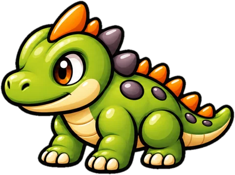

 FireDragon
FireDragonTap a stage to read its story.
Embrite is a round, chubby small dinosaur with bright green scales and a row of small orange spines running from the crown of its wide-eyed head down its back. Its tail is thick and short, and its tiny arms end in little claws it uses to dig holes in the volcanic soil of Dragon Spire. It is always warm to the touch, and nearby snow melts when it waddles through. The first guardian children who climbed Dragon Spire were guided by the sight of Embrite's orange spines bobbing ahead.
Field note: Embrite digs precisely three burrows every morning and sleeps in a different one each night, rotating weekly.
Dragon Spire. Embrite and its family are found in the Dragon Spire. See everyone who lives there.
Share a Bond Food that matches its types to become friends. Embrite loves:
A Bond Food is not a trick. It joins your spirit with the Kimuro's spirit, and only when it chooses you.
Print the Kimuro adventure packs: mazes, cards, a board game and Bond Mark medals.
See the printable packs